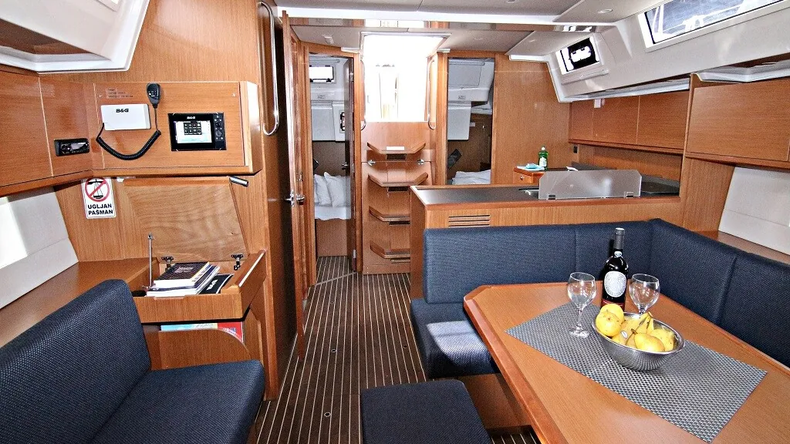
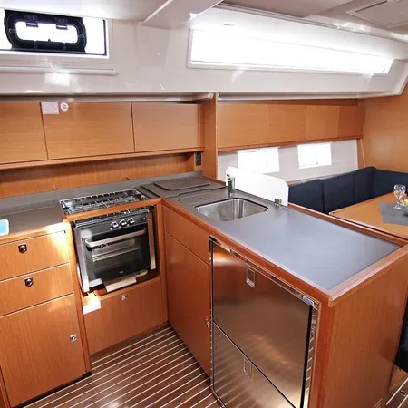
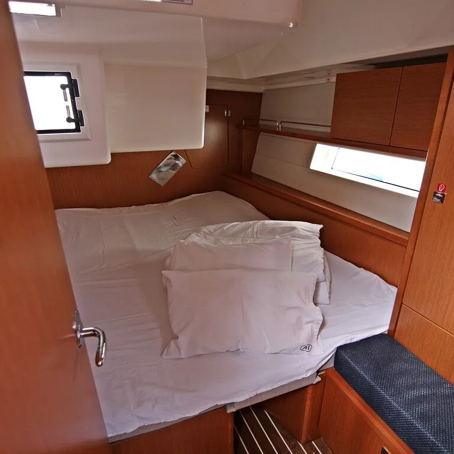
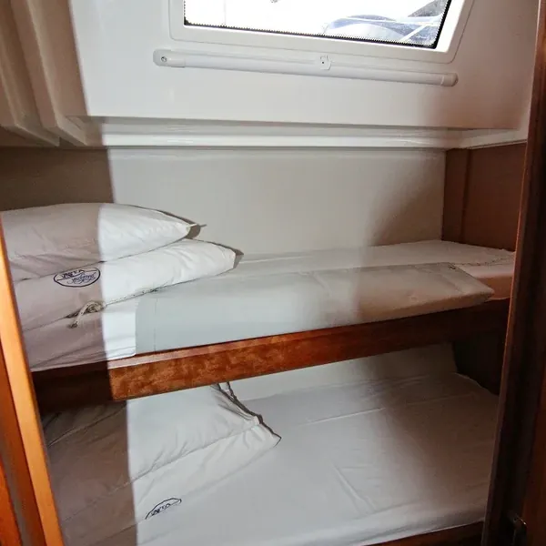
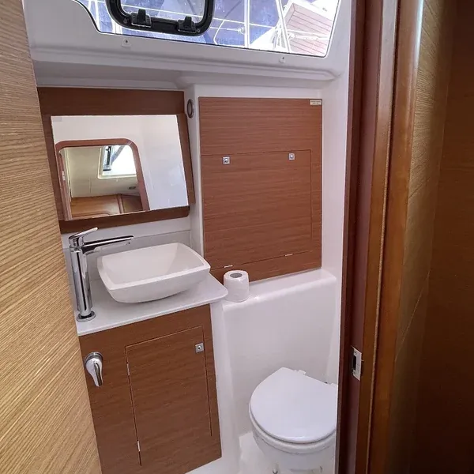

Eine Woche auf See, um abzulegen, was nicht mehr zu dir passt.
Sechs Menschen zwischen 25 und 35, zwei Begleitende, ein Segelboot vor Zadar. Wir arbeiten mit inneren Anteilen nach IFS, mit dem Körper und mit Klang. Und wir lassen Raum für das, was dabei auftaucht.
Foto folgtMorgens vor Anker: jemand springt vom Bug ins klare Wasser, die Sonne steht noch tief
Gruppe6 + 2Teilnehmende und Leitende
An BordSo – Frfünf Nächte auf dem Boot
RevierZadar44°07′ N · 15°14′ E
SaisonMai – Sepsechs Wochen in 2027
Danach2 Callsonline mit deiner Gruppe
Preis1.590 €pro Person
Ein Eindruck
Langsame Morgen, salzige Haut.
Foto folgtFrühstücksbowls im Cockpit, Morgenlicht
Foto folgtYoga an Deck in der Morgensonne
Foto folgtBaden in der Ankerbucht
Foto folgtAbendrunde im Cockpit mit Handpan
Die Woche
Erst ankommen, dann ablegen.
Fünf Stationen von Sonntag bis Freitag. Jeden Tag segeln wir ein Stück weiter, und jede Station hat ihr eigenes Thema.
1Sonntag
Ankommen & Ablegen
Anreise bis mittags, Kabinen beziehen, Sicherheitseinweisung. Dann der erste kurze Schlag in eine Ankerbucht. Abends legt ihr gemeinsam den Kurs der Woche fest.
2Montag
Verstehen & Verarbeiten
Die eigene Ausgangslage anschauen: Was beschäftigt mich gerade, und was will ich verstehen?
3Dienstag · Mittwoch
Loslassen & Zulassen
Altes loslassen, Neues zulassen. Auf Wunsch eine Nacht an Land und am Morgen danach ausführliche Körperarbeit.
4Donnerstag
Sich finden
Standortbestimmung: Wo stehe ich gerade wirklich, und wo will ich hin?
5Freitag
Mitnehmen & Anlegen
Abschlusskreis am letzten Ankerplatz, dann zurück in die Marina. Ballast bleibt an Bord, Erkenntnisse kommen mit.
Foto folgtMittag in der Ankerbucht, jemand springt vom Heck ins Wasser
Eine Tagesfrage, die dich beim Segeln begleiten kann
„Wessen Erwartungen erfülle ich?“
Ein Tag an Bord
So sieht ein voller Tag aus. Die Zeiten richten sich nach Wind, Wetter und Gruppe.
Aufstehen
Yoga, Körperübung oder Atemrunde an Deck
Gemeinsames Frühstück
Ablegen und segeln, mit einer Frage für den Tag
Ankern, baden, zusammen kochen
Gedanken teilen in der Runde
Freie Zeit, Reflexion zu dritt oder eine Einzelsession
Weitersegeln zum Platz für die Nacht
Ankommen und Journaling
Gemeinsames Essen
Teilen in der Gruppe, offener Abend
Nach der Woche treffen wir uns zweimal online, damit das Erlebte im Alltag ankommt.
Zwei Schwerpunkte
Eine Reise, zwei Zugänge.
Ablauf, Boot, Preis und Thema sind in jeder Woche gleich. Unterschiedlich ist, wie die Co-Leitung euch begleitet: über Bewegung und Haltung oder über den Atem.
Foto folgtYoga an Deck in der Morgensonne, Kalkfelsen im Hintergrund
Schwerpunkt
Yoga & Körperarbeit
Hier ist der Körper der Zugang. Morgens Yoga an Deck, über den Tag kleine Übungen zu Haltung, Wahrnehmung und Bewegung. Wer im Körper ankommt, kann oft mit mehr Ruhe anschauen, was innen gerade los ist.
Passt zu dir, wenn du gern in Bewegung bist und über den Körper zur Ruhe kommst.
Co-Leitung Yoga & KörperarbeitStellen wir bald vor · Mehr über sie
Foto folgtAtemrunde im Cockpit vor Anker, Abendlicht
Schwerpunkt
Breathwork
Hier ist der Atem der Zugang. Geführte Atemrunden an Deck oder vor Anker, mal ruhig, mal intensiver. Der Atem führt oft schneller an Gefühle heran, die im Alltag wenig Platz haben. Danach ist Zeit, das Erlebte in der Runde oder mit IFS anzuschauen.
Passt zu dir, wenn du neugierig auf intensivere Erfahrungen bist und gern mit dem Atem arbeitest.
Co-Leitung BreathworkStellen wir bald vor · Mehr über sie
Welche Woche welchen Schwerpunkt hat, geben wir mit den Terminen bekannt. In der Bewerbung kannst du angeben, was dich mehr anspricht, oder „Noch offen“ wählen.
Womit wir arbeiten
Erfahrung statt Entspannung.
Ablegen ist kein Wellness-Urlaub und keine Therapie. Es ist begleitete Selbsterfahrung in kleiner Gruppe, die im Alltag weiterwirkt.
Innere Anteile
Mit Internal Family Systems (IFS) schaust du freundlich auf die Stimmen in dir, die antreiben, schützen oder zweifeln.
Körper & Atem
Wahrnehmung, Bewegung und Atem, damit das Nervensystem zur Ruhe kommt und du Halt spürst. Je nach Woche mit Yoga oder Breathwork.
Klang
Handpan und Klangrituale am Abend, wenn der Anker gefallen ist.
Segeln
Gemeinsam ein Boot bewegen: Verantwortung teilen, Wind lesen, im Moment sein. Vorkenntnisse brauchst du keine.
Das Boot
Euer Zuhause für die Woche.
Wir leben die ganze Woche zu acht an Bord. Ihr sechs teilt euch drei Kabinen, wir beide schlafen in den kleinen Kabinen im Bug. Gekocht, gegessen und geredet wird im Cockpit und im Salon.
Heckkabinen
2, jeweils mit Doppelbett
Stockbettkabine
1, mit zwei Einzelbetten
Bugkabinen
2 Einzelkabinen für uns beide
Start und Ziel
Zadar, Kroatien
Noch nie gesegelt?
Damit du dir die Woche an Bord vorstellen kannst:
Du musst nichts können. Daniel führt das Boot. Wer mag, steuert ein Stück oder hilft beim Anlegen.
Wenig Strecke, viel Zeit. Wir segeln meist zwei, drei Stunden am Tag, den Rest liegen wir in Buchten vor Anker. Unter Segeln liegt das Boot etwas schräg, das ist normal.
Wenig Platz, viel draußen. Kabinen und Bad sind klein. Die meiste Zeit verbringen wir an Deck und im Wasser.
Wasser und Strom sind begrenzt. Wir duschen kurz und baden viel im Meer. Handy laden geht.
Eine weiche Tasche statt Koffer. Dazu Badesachen, Sonnenschutz, eine warme Schicht für den Abend und Schuhe mit heller Sohle, oder du gehst barfuß.
Seekrank? Sag es uns im Kennenlerngespräch. Die Strecken sind kurz, und zwischen den Inseln vor Zadar ist die See meist ruhig.





Wer begleitet
Zwei Menschen, die selbst noch unterwegs sind.
Wir leiten die Woche zu zweit und schlafen mit euch an Bord. Einer kümmert sich um Boot und Kurs, beide um die Gruppe. Die Co-Leitung wechselt je nach Schwerpunkt.
Daniel führt das Boot und leitet die Woche. Er begleitet die Arbeit mit inneren Anteilen und ist seit November 2026 in der IFS-Ausbildung.
Foto folgtDie Co-Leitung bei der Arbeit an Deck
Yoga & Körperarbeit · Breathwork
Co-Leitung
Je nach Woche begleitet dich eine Co-Leitung mit Erfahrung in Yoga und Körperarbeit oder in Breathwork. Wir stellen beide bald vor.
Termine & Preis 2027
1.590 €pro Person für die ganze Woche
Wann
Sechs Wochen zwischen Mai und September 2027, jeweils Sonntag bis Freitag
Termine
Die genauen Wochen veröffentlichen wir in Kürze. Gib in der Bewerbung einfach deinen Wunschmonat an.
Schwerpunkt
Yoga & Körperarbeit oder Breathwork, je nach Woche
Wo
Start und Ziel in Zadar, Kroatien
An Bord
6 Teilnehmende, 2 Leitende, alle schlafen an Bord
Enthalten
Platz an Bord, Skipper, Programm und Begleitung, zwei Online-Calls danach
Nicht enthalten
Anreise nach Zadar
So kommst du an Bord
1
BewerbenEin paar Fragen zu dir, in wenigen Minuten ausgefüllt.
2
KennenlernenEin kurzes Gespräch, gern per Video. Wir schauen gemeinsam, ob die Woche gerade zu dir passt.
3
Platz sichernDu bekommst ein Angebot mit allen Details zu Zahlung und Reisebedingungen.
Fragen
Was du vorher wissen willst.
Brauche ich Segelerfahrung?
Nein. Daniel ist Skipper und führt das Boot. Wer mag, steuert, hilft beim Segelsetzen oder lernt einen Palstek.
Für wen ist die Woche gedacht?
Für Menschen zwischen 25 und 35, die an einer Weggabelung stehen und merken, dass sie nach Erwartungen leben, die nicht ihre eigenen sind.
Yoga oder Breathwork: Was passt zu mir?
Beide Wochen haben dasselbe Thema, denselben Ablauf und denselben Preis. Bei Yoga & Körperarbeit kommst du über Bewegung und Haltung in den Körper, bei Breathwork über den Atem, der oft schneller und intensiver an Gefühle heranführt. Intensive Atemarbeit passt nicht zu jeder gesundheitlichen Situation, zum Beispiel in der Schwangerschaft oder bei Herz-Kreislauf-Erkrankungen. Wenn du unsicher bist, sprechen wir im Kennenlerngespräch darüber.
Muss ich mich schon für einen Schwerpunkt entscheiden?
Nein. Wähl in der Bewerbung einfach „Noch offen“, dann finden wir im Kennenlerngespräch gemeinsam die passende Woche.
Ist das eine Therapie?
Nein. Ablegen ist begleitete Selbsterfahrung in der Gruppe. Wir arbeiten mit IFS, Körperarbeit, Atem und Klang, versprechen aber keine Heilung. Im Kennenlerngespräch schauen wir gemeinsam, ob die Woche gerade das Richtige für dich ist.
Wie schlafen wir an Bord?
Alle acht schlafen auf dem Boot. Ihr sechs teilt euch zwei Heckkabinen mit Doppelbett und eine Stockbettkabine mit zwei Einzelbetten. Wir beide schlafen in den kleinen Kabinen im Bug. Auf Wunsch der Gruppe verbringen wir eine Nacht an Land.
Was passiert nach der Woche?
Wir treffen uns zweimal online mit deiner Gruppe. So hast du Zeit, das Erlebte im Alltag auszuprobieren, und einen Ort, um darüber zu sprechen.